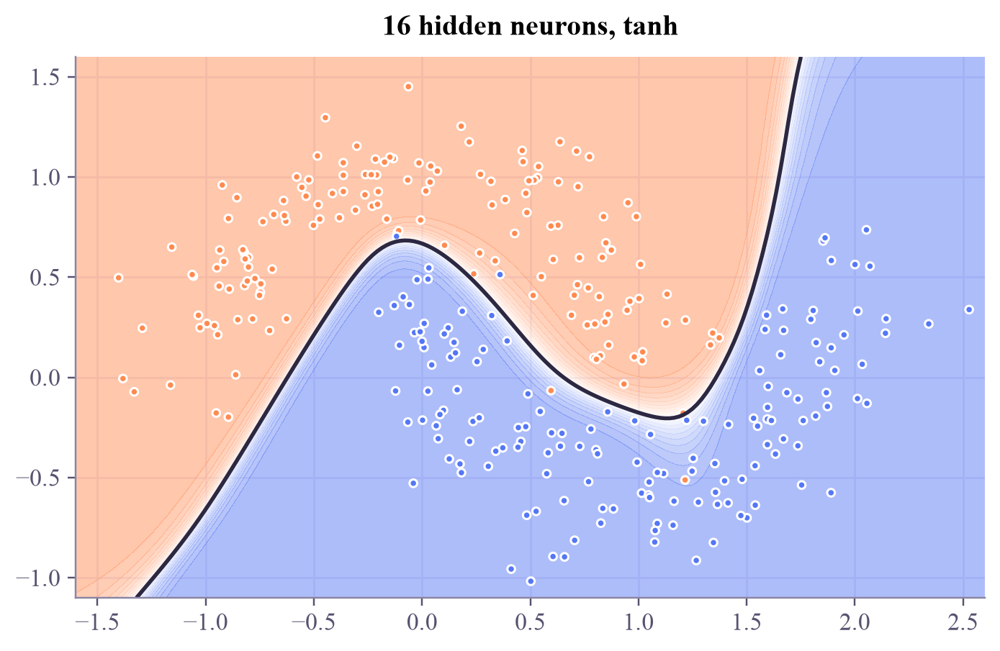
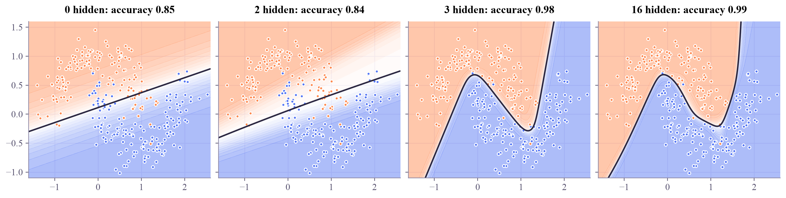

Sequential( (0): Linear(in_features=2, out_features=16, bias=True) (1): Tanh() (2): Linear(in_features=16, out_features=1, bias=True) ) trainable numbers: 65
Machine Learning
 about 11 min
about 11 min ml-w5d2.ipynb
ml-w5d2.ipynb
Layers that bend boundaries
Stack layers of tiny logistic regressions with a bend in between, and the decision boundary can take any shape.
In this lesson you will
- Describe a neuron, a layer and an activation function
- Explain why the nonlinearity is what lets boundaries bend
- Build and train a small network with
nn.Sequentialin PyTorch
Warm-up
1 minA straight line can't hug a moon

Yesterday one neuron could only draw one straight line, and XOR defeated it. Many datasets don't split along a straight line: think of two moons hooked into each other. Today you'll stack neurons into a network and watch the boundary bend around the data, live, in your browser.
Big idea
4 minNeurons, layers and the bend
A neuron takes a weighted sum of its inputs and passes it through an activation function:
With = sigmoid, that's exactly logistic regression. A layer is many neurons looking at the same inputs, each with its own weights. A network (a multilayer perceptron) feeds one layer's outputs into the next:
The activation is the key ingredient. Common choices are (a smooth S between −1 and 1) and (a hinge). Without it, stacking layers achieves nothing: a linear function of a linear function is still linear, so the boundary would stay straight.
Each hidden neuron draws its own soft line through the data. The next layer combines those lines into curves, corners and islands. With enough hidden neurons a network can approximate almost any boundary. The catch: more neurons also make it easier to overfit (Thursday's lesson shows how to keep networks honest).
Training is nothing new: the same PyTorch loop, with cross-entropy loss and backpropagation through all the layers.
Play
5 minA network playground
Pick a dataset and a network shape, then press Train. The background is the network's probability; the diagram shows its weights (thicker = larger, blue positive, orange negative).
Try this
Start with Circles and just 1 neuron: it can't do it. Try 2, then 3. Then go to the Spiral: it needs two hidden layers and some patience. Switch the activation to ReLU and look at the boundary: it's built from straight pieces.
Code
3 minA network in PyTorch
The notebook for this lessonEvery code cell below, with what it printed, is in
ml-w5d2.ipynb. To change the code and run it yourself, open the notebook in Google Colab (free, in your browser) or download it for your own Jupyter.import numpy as np
import torch
import matplotlib.pyplot as plt
from sklearn.datasets import make_moons
torch.set_num_threads(1)
X, y = make_moons(n_samples=300, noise=0.2, random_state=0)
Xt = torch.tensor(X, dtype=torch.float32)
yt = torch.tensor(y, dtype=torch.float32).reshape(-1, 1)
torch.manual_seed(0)
model = torch.nn.Sequential(
torch.nn.Linear(2, 16), # 2 inputs -> 16 hidden neurons
torch.nn.Tanh(), # the bend: a nonlinear activation
torch.nn.Linear(16, 1), # 16 hidden -> 1 output score
)
print(model)
print("trainable numbers:", sum(p.numel() for p in model.parameters()))What it printed in the notebook
Linear(2, 16) holds weights plus 16 biases, and Linear(16, 1) holds 16 weights plus 1 bias: 65 knobs in total.
optimizer = torch.optim.Adam(model.parameters(), lr=0.03)
loss_fn = torch.nn.BCEWithLogitsLoss()
for epoch in range(501):
optimizer.zero_grad()
loss = loss_fn(model(Xt), yt)
loss.backward()
optimizer.step()
if epoch % 100 == 0:
with torch.no_grad():
accuracy = ((model(Xt) > 0).float() == yt).float().mean().item()
print(f"epoch {epoch:3d}: loss {loss.item():.3f}, accuracy {accuracy:.3f}")What it printed in the notebook
epoch 0: loss 0.679, accuracy 0.797 epoch 100: loss 0.095, accuracy 0.980 epoch 200: loss 0.063, accuracy 0.983 epoch 300: loss 0.058, accuracy 0.987 epoch 400: loss 0.053, accuracy 0.987 epoch 500: loss 0.047, accuracy 0.987
from matplotlib.colors import LinearSegmentedColormap
apricot_blue = LinearSegmentedColormap.from_list("apricot_blue", ["#ff8a50", "#ffffff", "#5577f5"])
def plot_boundary(model, ax, title):
xx, yy = np.meshgrid(np.linspace(-1.6, 2.6, 200), np.linspace(-1.1, 1.6, 200))
grid = torch.tensor(np.c_[xx.ravel(), yy.ravel()], dtype=torch.float32)
with torch.no_grad():
p = torch.sigmoid(model(grid)).reshape(xx.shape).numpy()
ax.contourf(xx, yy, p, levels=20, cmap=apricot_blue, alpha=0.5)
ax.contour(xx, yy, p, levels=[0.5], colors="#2c2842", linewidths=1.8)
ax.scatter(X[:, 0], X[:, 1], c=np.where(y == 0, "#ff8a50", "#5577f5"), s=12)
ax.set_title(title)
fig, ax = plt.subplots(layout="constrained")
plot_boundary(model, ax, "16 hidden neurons, tanh")
plt.show()What it printed in the notebook

def train(hidden, epochs=600):
torch.manual_seed(1)
if hidden == 0:
net = torch.nn.Linear(2, 1)
else:
net = torch.nn.Sequential(torch.nn.Linear(2, hidden), torch.nn.Tanh(), torch.nn.Linear(hidden, 1))
opt = torch.optim.Adam(net.parameters(), lr=0.03)
for _ in range(epochs):
opt.zero_grad()
loss_fn(net(Xt), yt).backward()
opt.step()
with torch.no_grad():
acc = ((net(Xt) > 0).float() == yt).float().mean().item()
return net, acc
fig, axes = plt.subplots(1, 4, figsize=(13, 3.2), sharey=True, layout="constrained")
for ax, hidden in zip(axes, [0, 2, 3, 16]):
net, acc = train(hidden)
plot_boundary(net, ax, f"{hidden} hidden: accuracy {acc:.2f}")
plt.show()What it printed in the notebook

Two tanh neurons are not enough to hug the moons; three already are. Width matters, but only up to what the shape of the data needs.
Your turn
3 minYour turn: beat XOR
Yesterday a single neuron could never learn XOR. Give it a hidden layer of just two neurons and train it on the four XOR points. Then look at the two lines the hidden neurons draw. (The solution also tries 20 random starts: does it always work?)
Xx = torch.tensor([[0.0, 0.0], [0.0, 1.0], [1.0, 0.0], [1.0, 1.0]])
yx = torch.tensor([[0.0], [1.0], [1.0], [0.0]])
torch.manual_seed(0)
xor_net = None # TODO: nn.Sequential with a hidden layer of 2 neurons
# TODO: train with Adam (lr = 0.1) and BCEWithLogitsLoss for 1000 steps
if xor_net is not None:
with torch.no_grad():
print(torch.sigmoid(xor_net(Xx)).ravel().numpy().round(3))Need a hint?
torch.nn.Sequential(torch.nn.Linear(2, 2), torch.nn.Tanh(), torch.nn.Linear(2, 1)), then the usual five-line loop.
Show a solution
torch.manual_seed(0)
xor_net = torch.nn.Sequential(torch.nn.Linear(2, 2), torch.nn.Tanh(), torch.nn.Linear(2, 1))
optimizer = torch.optim.Adam(xor_net.parameters(), lr=0.1)
loss_fn = torch.nn.BCEWithLogitsLoss()
for step in range(1000):
optimizer.zero_grad()
loss_fn(xor_net(Xx), yx).backward()
optimizer.step()
with torch.no_grad():
print("P(1) for 00, 01, 10, 11:", torch.sigmoid(xor_net(Xx)).ravel().numpy().round(3))
W, b = xor_net[0].weight.detach().numpy(), xor_net[0].bias.detach().numpy()
for k in range(2):
print(f"hidden neuron {k + 1} draws the line {W[k, 0]:+.2f}·x1 {W[k, 1]:+.2f}·x2 {b[k]:+.2f} = 0")
print("Two lines, combined by the output neuron, cut off the two corners that XOR needs. That's the whole trick.")
# Bonus: is it always that easy? Train from 20 different random starts.
def solves_xor(hidden, seed):
torch.manual_seed(seed)
net = torch.nn.Sequential(torch.nn.Linear(2, hidden), torch.nn.Tanh(), torch.nn.Linear(hidden, 1))
opt = torch.optim.Adam(net.parameters(), lr=0.1)
for _ in range(1000):
opt.zero_grad()
loss_fn(net(Xx), yx).backward()
opt.step()
with torch.no_grad():
return bool(((torch.sigmoid(net(Xx)) > 0.5).float() == yx).all())
for hidden in [2, 4]:
wins = sum(solves_xor(hidden, s) for s in range(20))
print(f"{hidden} hidden neurons: solved XOR from {wins} of 20 random starts")
print("With only 2 neurons, many starts get stuck in a local minimum; a little extra width removes most of the traps.")What it printed in the notebook
P(1) for 00, 01, 10, 11: [0. 1. 1. 0.] hidden neuron 1 draws the line -5.18·x1 +5.12·x2 -2.53 = 0 hidden neuron 2 draws the line +4.57·x1 -4.74·x2 -2.17 = 0 Two lines, combined by the output neuron, cut off the two corners that XOR needs. That's the whole trick. 2 hidden neurons: solved XOR from 7 of 20 random starts 4 hidden neurons: solved XOR from 19 of 20 random starts With only 2 neurons, many starts get stuck in a local minimum; a little extra width removes most of the traps.
Check yourself
2 minQuick check
Question 1 of 3
What happens if you remove every activation function from a deep network?
Question 2 of 3
How many trainable numbers are in
nn.Linear(3, 4)?Question 3 of 3
A logistic-regression classifier is the same as…
Wrap-up
1 minToday in one sentence
Quantum link
Parameterised quantum circuits are often called quantum neural networks. Layers of rotation gates play the role of weights, entangling gates connect the qubits like the edges between neurons, and a measurement gives the output probability. One difference: the gates themselves are linear, so the "bend" comes from how the data is put into the circuit and from the measurement.
Go deeper (optional)
ISLP section 10.2 (multilayer neural networks). The interactive "TensorFlow Playground" website is a lovely companion to today's widget.
Next in Machine Learning: backpropagation, the way a network finds every one of its gradients.

That's the lesson!
Tap the button to save it. Short and steady wins.
Marked by mistake? Undo